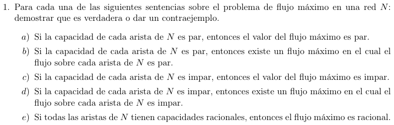
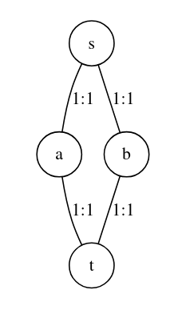

Sea \(N = (V,E)\) un flujo, dos nodos distinguidos \(s\) fuente, \(t\) sumidero, \(c\) una función de capacidad.
Queremos probar que \(\forall(u,v) \in E\underset{L}{\rightarrow}c(u,v) \equiv 0\left( \operatorname{mod}2 \right) \Longrightarrow F_{\text{max }} \equiv 0\left( \operatorname{mod}2 \right)\)
Sea \(S\) un corte, \(T = V\backslash S\)
Con \(ST = \left\{ (u,v) \in E~|~u \in S,v \in T \right\}\)
Por definición, la capacidad de un corte \(S\) es tal que \[c(S) = \sum_{e \in ST}c(e)\]
Y por hipótesis sabemos que \(\forall(u,v) \in E\underset{L}{\rightarrow}c(u,v) \equiv 0\left( \operatorname{mod}2 \right)\) por lo que para cualquier corte \(S\):
\[c(S) = \sum_{(u,v) \in ST}c(u,v) \equiv 0\left( \operatorname{mod}2 \right)\]
En particular, un corte mínimo \(c(S') \equiv 0\left( \operatorname{mod}2 \right)\)
Y por teorema de flujo máximo/ corte mínimo sabemos que el flujo máximo es igual al corte mínimo.
\(F_{\max} = c(S') \land c(S') \equiv 0\left( \operatorname{mod}2 \right) \Longrightarrow F_{\max} \equiv 0\left( \operatorname{mod}2 \right)\)
\(⬜\)
Queremos probar que \(\forall(u,v) \in E\underset{L}{\rightarrow}c(u,v) \equiv 0\left( \operatorname{mod}2 \right) \Longrightarrow \exists F_{\max}~|~e \equiv 0\left( \operatorname{mod}2 \right),\forall e \in E\)
Usando el inciso (a) sabemos que \(\forall(u,v) \in E\underset{L}{\rightarrow}c(u,v) \equiv 0\left( \operatorname{mod}2 \right) \Longrightarrow F_{\text{max }} \equiv 0\left( \operatorname{mod}2 \right)\)
\(F_{\max} = \max\left\{ F~|~f\text{ es un flujo factible} \right\}\).
Queda ver que \(\exists F_{\max} \equiv 0\left( \operatorname{mod}2 \right)~|~\forall f(u,v) \equiv 0\operatorname{mod}2,\forall(u,v) \in E\)
Veamoslo por inducción en las iteraciones de Ford Furkerson:
Hipótesis 1: \(\forall(u,v) \in E\underset{L}{\rightarrow}c(u,v) \equiv 0\left( \operatorname{mod}2 \right)\)
Caso base:
\(\forall(u \rightarrow w) \in E:f(u \rightarrow w) = 0 \equiv 0\operatorname{mod}2\)
Paso inductivo:
HI En la \(k\)-ésima iteración, \(f_{k}(v,w) \equiv 0\operatorname{mod}2,\forall(v,w)\)
Veamos la iteración \(k + 1\)-ésima
En cada iteración, el algoritmo encuentra \(\Delta(P) = \min\limits_{e \in P}\left\{ \Delta(e) \right\}\)
\[\Delta(v \rightarrow w) = \begin{cases} c(v \rightarrow w) - f(v \rightarrow w) & \text{si }(v \rightarrow w) \in E \\ f(v \rightarrow w) & \text{si }(w \rightarrow v) \in E \end{cases}\]
Por hipótesis 1 e hipótesis inductiva, \(c(v \rightarrow w) \equiv 0\operatorname{mod}2 \land f(v \rightarrow w) \equiv 0\operatorname{mod}2\)
Por lo que \(\Delta(P) \equiv 0\operatorname{mod}2\)
Y cada actualización de flujo cae en uno de estos 3 casos:
\(f_{k + 1}(v \rightarrow w)\underset{\text{HI }}{\equiv}0\operatorname{mod}2\)
\(f_{k + 1}(v \rightarrow w) + \Delta(P)\underset{\text{HI }}{\equiv}\Delta(P)\operatorname{mod}2 \equiv 0\operatorname{mod}2\)
\(f_{k + 1}(v \rightarrow w) - \Delta(P)\underset{\text{HI }}{\equiv}\Delta(P)\operatorname{mod}2 \equiv 0\operatorname{mod}2\)
Como queriamos probar, el flujo de toda arista se mantiene impar.
\(\therefore\forall(u,v) \in E,f(u,v) \equiv 0\operatorname{mod}2\) y en particular, \(F_{\max} = |f^{\ast}| \equiv 0\operatorname{mod}2\)
\(⬜\)
Nota: esta demostración es mucho más sencilla trabajando sobre \({\mathbb{Z}}\text{ / }2{\mathbb{Z}}\).
Contraejemplo:

\(F_{\max} = 2\)